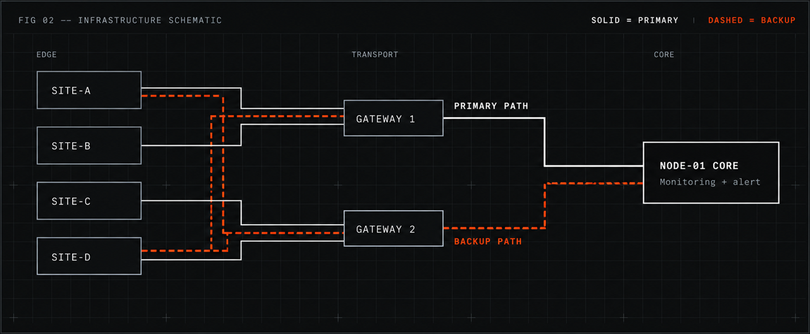

OPERATIONAL
CLARITY.
EVERYWHERE.
One view of the systems that keep your facilities moving.
Explore System- Multi-site
- Offline-tolerant
- Audit-ready
FIG 01 — MONITORING SYSTEM OVERVIEW● PREVIEW
01 / The Problem
COMPLEX
INFRASTRUCTURE.
FRAGMENTED
VISIBILITY.
Each facility brings its own tools, alerts, and blind spots. When something fails, teams piece the story together from separate screens, and time is lost before action starts.
02 / How it works
GATHER. UNDERSTAND. ACT.
- 01
GATHER
Signals from sensors, links, and devices at every facility, collected at the edge.
- 02
UNDERSTAND
Related events grouped into a single incident, so teams see causes, not noise.
Grouped by site, link and time, with the likely origin flagged first.
- 03
ACT
Clear escalation and redundant alerting reach the right people when it matters.
03 / Capabilities
- VISIBILITY
- See every site in one place, in one language of health.
- RESILIENCE
- Local buffering and redundant paths keep the picture alive during outages.
- CONTROL
- Role-based access and clear escalation, with every action on record.
04 / Infrastructure schematic
REDUNDANT
BY DESIGN.

05 / Product
NODE—01
The monitoring platform behind the picture.
Status, topology, and events in one interface.
NODE-01 / STATUSPREVIEW
- SITE-A · North RelayNOMINAL
- SITE-B · Data HallNOMINAL
- SITE-C · SubstationFAILOVER
- SITE-D · Remote DepotOFFLINE
Built for the moments that matter.